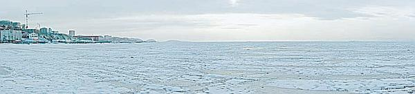
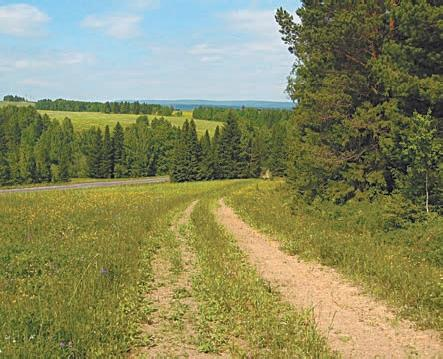

Прохождение внедорожных маршрутов.
Ни в одной автошколе курсантам не рассказывают о том, как правильно проходить сложные внедорожные маршруты (например, ледовая переправа, водная преграда, лесная дорога). По всей вероятности, это происходит потому, что учебная программа предусматривает предоставление учащимся лишь необходимого минимума знаний, достаточного для безопасной езды в типичных условиях.
Однако возможно, что водителю придется столкнуться с преодолением внедорожного маршрута. Далее я постараюсь восполнить пробел учебной программы и расскажу, как вести себя на ледовой переправе, при преодолении водной преграды и на лесной дороге.
При необходимости проехать через ледовую переправу (рис. 4.6) вначале оцените толщину льда, а также постарайтесь найти наиболее короткий и безопасный маршрут движения. Как правило, он намечается заранее: через каждые 15–20 метров во льду по ходу движения вырубаются небольшие лунки.

Рис. 4.6. Ледовая переправа
ВНИМАНИЕ
На легковой машине можно ехать по льду лишь в случае, когда на протяжении всего пути толщина льда составляет не менее 15 сантиметров.
При меньшей толщине льда настоятельно рекомендуется отказаться от движения по такой переправе.
ВНИМАНИЕ
Ехать по льду нужно на максимально разгруженной машине, создавая минимальное давление на лед. Перед тем как въехать на переправу, обязательно высадите всех пассажиров – это спасет им жизнь, если автомобиль начнет проваливаться под воду.
Преодолевать ледовую переправу нужно на пониженной передаче со скоростью не более 10 километров в час. Во время движения водительская дверь должна быть постоянно открыта, это позволит вам успеть вовремя покинуть машину при треске льда, его сильном прогибе, выступлении воды и иных опасных признаках, свидетельствующих о возможном провале автомобиля под лед.
Преодоление водной преграды имеет свои тонкости. Во-первых, вы должны заранее оценить твердость дна, глубину, наличие на дне различных опасных препятствий (камней, кореньев деревьев, ям).
ПРИМЕЧАНИЕ
На стандартной «легковушке» невозможно преодолеть водную преграду, глубина которой более 50 сантиметров.
Выбрав направление движения, пометьте предстоящий путь специальными вешками, чтобы, находясь в воде, не потерять дорогу. В качестве таких вешек можно использовать воткнутые в дно палки или колья, между которыми должен двигаться автомобиль.
ВНИМАНИЕ
Перед началом движения не забудьте закрыть жалюзи радиатора, в противном случае вода проникнет в систему зажигания и автомобиль заглохнет.
Двигаться по водной преграде нужно не спеша, ровно и плавно, на пониженной передаче и средних оборотах двигателя. На заключительном этапе преодоления водной преграды (то есть непосредственно перед выездом на берег) плавно увеличьте подачу топлива. Выехав из воды, просушите тормозные колодки и диски, несколько раз несильно нажав на педаль тормоза во время движения.
Особого мастерства и умения требует от водителя езда по лесным дорогам (рис. 4.7). Когда автомобиль движется по накатанной колее, нужно лишь своевременно реагировать на появляющиеся корни деревьев, ямы и ухабы. Но когда на дороге возникает более серьезное препятствие (например, упавшее поперек дороги дерево), придется его объезжать. Учтите, что в лесу на первый взгляд земля может выглядеть твердой, но подо мхом или травой вполне может скрываться яма. Поэтому, перед тем как объезжать препятствие, не поленитесь выйти из автомобиля и удостовериться в надежности выбранного направления.

Рис. 4.7. Лесные и проселочные дороги могут быть весьма коварными
Во время движения по лесу старайтесь по возможности не наезжать на палки, сучья, так как значительная их часть может «скрываться» в кустах, траве, во мху, а на дороге будет лежать лишь ее небольшой конец, и при наезде на этот конец палка может ударить по боковой части вашего автомобиля.
Решив оставить автомобиль и отойти от него на какое-либо расстояние (например, для сбора грибов), обязательно закройте его и поставьте на сигнализацию (при наличии таковой). Известны случаи, когда в лесу машины не только обворовывали, уносив из салона и багажника все более или менее ценное, но и угоняли.
И не забывайте, что в лесу можно потерять местоположение своего автомобиля, отойдя от него даже на небольшое расстояние (уже через 20–40 метров вы не увидите его за деревьями и кустами). Поэтому старайтесь запомнить место, где вы оставили своего «железного друга», по характерным приметам (высокий куст, сломанное дерево, лесная тропинка и др.).